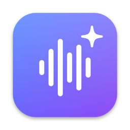

Hold fn to dictate in English, Urdu or Hindi. Select text and press ⌥2 to rewrite it. Setup takes about five minutes.
Open Terminal, paste this and press Return. It installs the latest version and opens it. Then jump to step 4.
Open the latest release and click Reword-x.y.z.dmg under Assets.
Open the downloaded DMG. Drag the Reword icon onto the Applications folder, then open Reword from Applications.
The first time, macOS says Reword can't be opened because it isn't from the App Store. Click Done, then go to System Settings › Privacy & Security, scroll to the bottom and click Open Anyway. Enter your Mac password if asked.
Reword asks for Accessibility so it can read and replace selected text. Turn on Reword in System Settings › Privacy & Security › Accessibility. The first time you hold fn, allow the Microphone.
Out of the box, fn opens the emoji picker. In System Settings › Keyboard, set Press 🌐 key to to Do Nothing.
Then in Reword's Settings › Voice, pick the language you speak. Dictation works from here.
Rewriting uses your own free key. Pick one service, sign in there and create a key:
In Reword, open Settings › AI, choose the same service, paste the key and click Test key. The key stays in your Mac's Keychain and only goes to that service.
Updates come in from the menu bar icon: click Install update when it shows up.
| Shortcuts do nothing | Check Accessibility in step 4. If Reword is already on, remove it from the list with −, then add it again. |
| fn opens emoji | Step 5: set “Press 🌐 key to” to Do Nothing. |
| Urdu comes out wrong | Reword › Settings › Voice › I speak › Urdu + English. It understands English too. |
| “Limit is used up” | Free keys have limits. Wait a while, or switch service in Settings › AI. |
| Terminal says “needs macOS 26” | Reword only runs on macOS 26 or later with an Apple silicon Mac. |